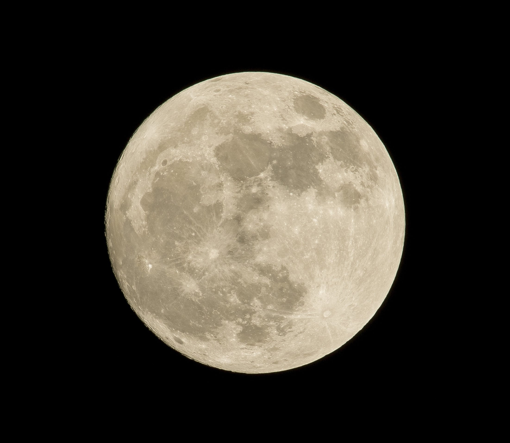

Un satellite naturel (ou aussi appelé lune) est un objet céleste en orbite autour d'une planète ou d'un autre objet plus massif que lui-même et qui n'est pas d'origine humaine. Au contraire, on parle de satellite artificiel quand c'est un satellite d'origne humaine, envoyé depuis la Terre.

Photo de lune
Les planètes confirmées ainsi que les planètes naines du Système Solaire possèdent toutes plus ou moins des lunes:
| Nom | Nombre |
|---|---|
| Mercure | 0 |
| Vénus | 0 |
| Terre | 1 |
| Mars | 2 |
| Jupiter | 115 |
| Saturne | 293 |
| Uranus | 29 |
| Neptune | 16 |
| Nombre total | 455 |
| Nom | Nombre |
|---|---|
| Cérès | 0 |
| Pluton | 5 |
| Eris | 1 |
| Hauméa | 2 |
| Makémaké | 1 |
| Nombre total | 9 |